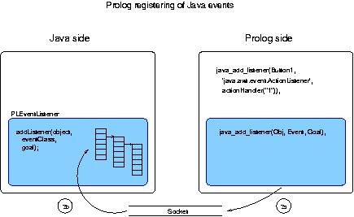
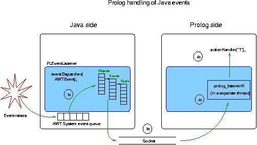

Author(s): Jesús Correas.
Version: 1.7#125 (2001/10/17, 13:42:47 CEST)
Version of last change: 1.7#74 (2001/3/26, 12:12:29 CEST)
This module defines the low level Prolog to Java interface. This interface allows a Prolog program to start a Java process, and create Java objects, invoke methods, set/get attributes (fields), and handle Java events.
Although the Java side interface is explained in Javadoc format, the general interface structure is detailed here.
This low-level prolog to java interface is made up of two parts: a Prolog part and a Java part. The Prolog part receives requests from a Prolog program and sends them to the Java part through a socket. The Java part receives requests from the socket and performs the actions included in the requests.
If an event is thrown in the java side, an asynchronous message must be sent away to the prolog side, in order to launch a prolog goal to handle the event. This asynchronous communication is made by the means of a second socket. The nature of this communication needs the use of threads both in java and prolog: one thread to deal with the 'sequential program flow,' and other thread (may be several) to do the job of event handling.
In the java side the threads are automatically created by the context of the objects we use: adding an event listener implies automatically that there will be a thread ready to launch it when the event raises. The prolog side is different: there must be a thread in the low-level interface that listens to the asynchronous socket to launch the goals requested.
The prolog side receives the actions to do in the java side from the user program, and sends them to the java side through the socket connection. When the action is done in the java side, the result is returned to the user program, or the action fails if any problem in the java side is found.
In order to send and receive prolog terms and java object references using a socket, this layer must transform this elements in a serialized representation, just like the java serialization package does. This transformation is done in our implementation using the fast_read/1 and fast_write/1 predicates included in Ciao, so any prolog element can be translated to and from a list of bytes.
Prolog data representation of java elements is very simple in this low-level interface. Java primitive types such as integers and characters are translated into Prolog terms, and even some Java objects are translated that way (e. g. Java strings). Java objects are represented in Prolog as compound terms with a reference to identify the corresponding Java object. Data conversion is made automatically when the interface is used, so the Prolog user programs do not have to deal with the complexity of this tasks.
The java side of this layer is more complex than the prolog side. The tasks this part have to deal to are the following:
In the implementation of the java side, two items must be carefully designed: the handling of java objects, and the representation of prolog data structures. The last item is specially important because all the interactions between prolog and java are made using prolog structures, an easy way to standardize the different data management of both languages. Even the requests themselves are encapsulated using prolog structures. The overload of this encapsulation is not significant in terms of socket traffic, due to the optimal implementation of the prolog serialized term.
The java side must handle the objects created from the prolog side dinamically, and these objects must be accessed as fast as possible from the set of objects. The java API provides a powerful implementation of Hash tables that achieves all the requirements of our implementation.
On the other hand, the java representation of prolog terms is made using the inheritance of java classes. In the java side exists a representation of a generic prolog term, implemented as an abstract class in java. Variables, atoms, compound terms, lists, and numeric terms are classes in the java side which inherit from the term class. Java objects can be seen also under the prolog representation as compound terms, where the single argument corresponds to the Hash key of the actual java object in the Hash table referred to before. This behaviour makes the handling of mixed java and prolog elements easy. Prolog goals are represented in the java side as objects which contain a prolog compound term with the term representing the goal. This case will be seen more in depth next, when the java to prolog is explained.
Java event handling is based on a delegation model since version 1.1.x. This approach to event handling is very powerful and elegant, but a user program cannot handle all the events that can raise on a given object: for each kind of event, a listener must be implemented and added specifically. However, the Java 2 API includes a special listener (AWTEventListener) that can manage the internal java event queue.
The prolog to java interface has been designed to emulate the java event handler, and is also based on event objects and listeners. The low level prolog to java interface implements its own event manager, to handle those events that have prolog listeners associated to the object that raises the event. From the prolog side can be added listeners to objects for specific events. The java side includes a list of goals to launch from the object and event type.
Due to the events nature, the event handler must work in a separate thread to manage the events asynchronously. The java side has its own mechanisms to work this way. The prolog side must be implemented specially for event handling using threads. The communication between java and prolog is also asynchronous, and a additional socket stream is used to avoid interferences with the main socket stream. The event stream will work in this implementation only in one way: from java to prolog. If an event handler needs to send back requests to java, it will use the main socket stream, just like the requests sent directly from a prolog program.
The internal process of register a Prolog event handler to a Java event is shown in the next figure:

When an event raises, the low-level Prolog to Java interface have to send to the Prolog user program the goal to evaluate. Graphically, the complete process takes the tasks involved in the following figure:

Java exception handling is very similar to the peer prolog handling: it includes some specific statements to trap exceptions from user code. In the java side, the exceptions can be originated from an incorrect request, or can be originated in the code called from the request. Both exception types will be sent to prolog using the main socket stream, leaving the prolog program manage the exception. However, the first kind of exceptions are prefixed, so the user program can distinguish from the second type of exceptions.
In order to handle exceptions properly using the prolog to java and java to prolog interfaces simultaneously, in both sides of the interface will be filtered those exceptions coming from their own side: this avoids an endless loop of exceptions bouncing from one side to another.
javart):- use_module(library(javart)).
java_start/0,
java_start/1,
java_start/2,
java_stop/0,
java_connect/2,
java_disconnect/0,
java_use_module/1,
java_create_object/2,
java_delete_object/1,
java_invoke_method/2,
java_get_value/2,
java_set_value/2,
java_add_listener/3,
java_remove_listener/3.
machine_name/1,
java_constructor/1,
java_object/1,
java_event/1,
prolog_goal/1,
java_field/1,
java_method/1.
javart)No further documentation available for this predicate.
Usage: java_start(+classpath)
+classpath is a string (a list of character codes).
(basic_props:string/1)
Usage: java_start(+machine_name,+classpath)
+machine_name is currently instantiated to an atom.
(term_typing:atom/1)
+classpath is a string (a list of character codes).
(basic_props:string/1)
Usage:
Usage: java_connect(+machine_name,+port_number)
+machine_name is the network name of a machine.
(javart:machine_name/1)
+port_number is an integer.
(basic_props:int/1)
Usage:
Usage: machine_name(X)
X is the network name of a machine.
Usage: java_constructor(X)
X is a java constructor (structure with functor as constructor full name, and arguments as constructor arguments).
Usage: java_object(X)
X is a java object (a structure with functor '$java_object', and argument an integer given by the java side).
Usage: java_event(X)
X is a java event represented as an atom with the full event constructor name (e.g., 'java.awt.event.ActionListener').
Usage: prolog_goal(X)
X is a prolog predicate. Prolog term that represents the goal that must be invoked when the event raises on the object. The predicate arguments can be java objects, or even the result of java methods. These java objects will be evaluated when the event raises (instead of when the listener is added). The arguments that represent java objects must be instantiated to already created objects. The variables will be kept uninstantiated when the event raises and the predicate is called.
Usage: java_field(X)
X is a java field (structure on which the functor name is the field name, and the single argument is the field value).
No further documentation available for this predicate.
Usage: java_create_object(+java_constructor,-java_object)
+java_constructor is a java constructor (structure with functor as constructor full name, and arguments as constructor arguments).
(javart:java_constructor/1)
-java_object is a java object (a structure with functor '$java_object', and argument an integer given by the java side).
(javart:java_object/1)
Usage: java_delete_object(+java_object)
+java_object is a java object (a structure with functor '$java_object', and argument an integer given by the java side).
(javart:java_object/1)
Usage: java_invoke_method(+java_object,+java_method)
+java_object is a java object (a structure with functor '$java_object', and argument an integer given by the java side).
(javart:java_object/1)
+java_method is a java method (structure with functor as method name, and arguments as method ones, plus a result argument. This result argument is unified with the atom 'Yes' if the java method returns void).
(javart:java_method/1)
Usage: java_method(X)
X is a java method (structure with functor as method name, and arguments as method ones, plus a result argument. This result argument is unified with the atom 'Yes' if the java method returns void).
Usage: java_get_value(+java_object,+java_field)
+java_object is a java object (a structure with functor '$java_object', and argument an integer given by the java side).
(javart:java_object/1)
+java_field is a java field (structure on which the functor name is the field name, and the single argument is the field value).
(javart:java_field/1)
Usage: java_set_value(+java_object,+java_field)
+java_object is a java object (a structure with functor '$java_object', and argument an integer given by the java side).
(javart:java_object/1)
+java_field is a java field (structure on which the functor name is the field name, and the single argument is the field value).
(javart:java_field/1)
Meta-predicate with arguments: java_add_listener(?,?,goal).
Usage: java_add_listener(+java_object,+java_event,+prolog_goal)
+java_object is a java object (a structure with functor '$java_object', and argument an integer given by the java side).
(javart:java_object/1)
+java_event is a java event represented as an atom with the full event constructor name (e.g., 'java.awt.event.ActionListener').
(javart:java_event/1)
+prolog_goal is a prolog predicate. Prolog term that represents the goal that must be invoked when the event raises on the object. The predicate arguments can be java objects, or even the result of java methods. These java objects will be evaluated when the event raises (instead of when the listener is added). The arguments that represent java objects must be instantiated to already created objects. The variables will be kept uninstantiated when the event raises and the predicate is called.
(javart:prolog_goal/1)
Usage: java_remove_listener(+java_object,+java_event,+prolog_goal)
+java_object is a java object (a structure with functor '$java_object', and argument an integer given by the java side).
(javart:java_object/1)
+java_event is a java event represented as an atom with the full event constructor name (e.g., 'java.awt.event.ActionListener').
(javart:java_event/1)
+prolog_goal is a prolog predicate. Prolog term that represents the goal that must be invoked when the event raises on the object. The predicate arguments can be java objects, or even the result of java methods. These java objects will be evaluated when the event raises (instead of when the listener is added). The arguments that represent java objects must be instantiated to already created objects. The variables will be kept uninstantiated when the event raises and the predicate is called.
(javart:prolog_goal/1)
Go to the first, previous, next, last section, table of contents.